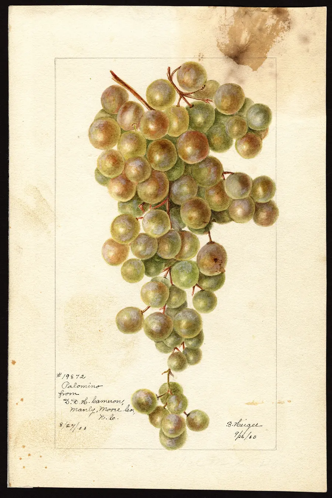

Tres andanas, ciento ocho botas
Roble americano de seiscientos litros, llenas a cinco sextos para que respire la flor.
Desde 1931 en el barrio de Santiago, con el techo alto y las ventanas al poniente.

-
Primero, la albariza da el palomino.
Vendimiamos a mano a primeros de septiembre en el pago de Macharnudo. La tierra blanca guarda la lluvia del invierno y se la devuelve a la cepa en agosto.
-
Luego la flor cubre el vino.
En la bota a cinco sextos crece un velo de levaduras que aísla el vino del aire. Bajo él se cría el fino. Si lo encabezamos a 17 grados, la flor no aparece y nace un oloroso.
-
Después baja de andana en andana.
Cada año sacamos una parte de la fila del suelo y la reponemos con la de arriba. Ninguna botella lleva una sola cosecha: lleva todas las que han pasado por la solera.
-
Al final, la venencia.
El capataz atraviesa la flor con la venencia y sirve desde lo alto, a la copa, sin tocar el borde. Así lo probarás tú en la bodega.

Saca de abajo y mira bajar el resto
Nunca se embotella una bota entera. De la fila del suelo, la solera, sacamos cada año un tercio del fino o un quinto del oloroso, y la rellenamos con vino de la andana de arriba. Esa se rellena con la siguiente, y la última con el vino nuevo, la sobretabla. Por eso aquí no hay añadas.
- Edad media de la copa
- 10,0 años
- Cosechas en la copa
- 16, de 2007 a 2022
- La cosecha que más pesa
- 2018, un 11 %
- Queda de la primera cosecha, la de 1930
- ni una gota


Fino, diez años bajo flor
Palomino de Macharnudo criado entero bajo velo de flor en tres andanas. Seco y salino, con almendra cruda y miga de pan. Se bebe frío, a siete grados, y una vez abierto aguanta una semana en la nevera.
- Crianza
- Biológica
- Edad media
- 10 años
- Grado
- 15 % vol.
- Botella
- 75 cl · 16 €
Amontillado, dieciocho años
Empieza como nuestro fino. Cuando la flor se agota, pasados los diez años, lo encabezamos a diecisiete grados y sigue otros ocho en una solera sin velo. Avellana tostada, yodo y un final largo y seco.
- Crianza
- Biológica y oxidativa
- Edad media
- 18 años
- Grado
- 18 % vol.
- Botella
- 50 cl · 28 €
Oloroso, dieciséis años
Lo encabezamos desde el primer día para que no crezca la flor y el aire haga su trabajo despacio. Sale caoba, con nuez, cuero y un punto de naranja amarga. Seco, aunque huela a dulce.
- Crianza
- Oxidativa
- Edad media
- 16 años
- Grado
- 19 % vol.
- Botella
- 50 cl · 26 €
Pedro Ximénez, doce años
Uva Pedro Ximénez asoleada sobre esteras hasta que se vuelve pasa. El mosto se encabeza y se cría en su propia solera, la más pequeña de la casa. Higo, dátil y café; para el postre o para el queso azul.
- Crianza
- Oxidativa
- Edad media
- 12 años
- Grado
- 15 % vol.
- Botella
- 37,5 cl · 24 €
Visitas y catas, de martes a sábado
- Visita y finoMar a sáb · 12:00 · 18 €
- Cata de cuatroMar a sáb · 13:30 · 32 €
- Venencia en manoSábados · 11:00 · 45 €
- Oloroso y quesoViernes · 17:30 · 38 €
- La sacristíaCon cita · hasta 6 · 90 €
Las visitas duran entre una hora y cuarto y dos horas, y las llevan el capataz (la cata de cuatro y «La sacristía») o alguien de la casa (el resto): «Visita y fino», la cata de cuatro y «La sacristía», en español o en inglés; el taller y «Oloroso y queso», solo en español. Grupos de doce personas como máximo. En la cata de cuatro se prueban fino, amontillado, oloroso y Pedro Ximénez, sacados con venencia de la solera.
«Venencia en mano» es un taller: aprende a venenciar con agua y luego con fino. «La sacristía» abre las botas más viejas de la casa, que no se venden. Los menores entran gratis acompañados y no prueban vino: para ellos hay zumo de uva.
Bodega Bota Chica

11403 Jerez de la Frontera
Mar a sáb de 11 a 19 h